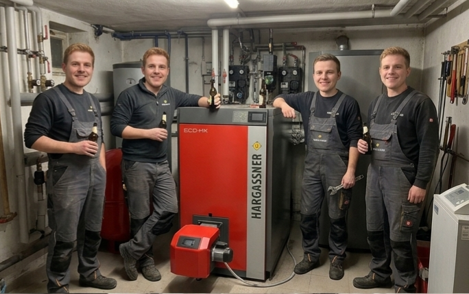

Stammtisch in der Heizung
Unsere Heizung — powered by Hargassner — bietet ein gemütliches Setting für Stammtische bis zu 30 Personen. Sitzanordnung und Tische können flexibel gestellt werden. Ideal für Vereinsabende, Geburtstagsrunden oder einfach zum Bieraustausch.

Regelmäßiger Sonntags-Stammtisch
Jeden Sonntag Nachmittag treffen sich Freunde, Wanderer und Durstige zum Stammtisch — unser Sonntags‑Daydrinking ist legendär. Kommt um 15:00 vorbei: Bier in der Hand, Sonne im Herzen.
"Durch die Almbachklamm zum Daydrinking mit Stil - Da Kopf duad weh und d'Haxn stinga, do muaß i glei a Bier drauf dringa!"